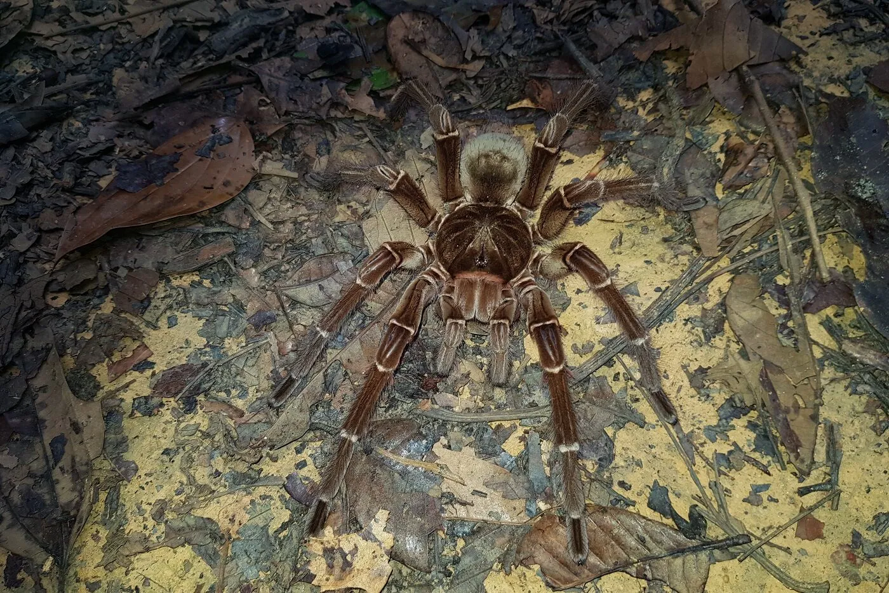
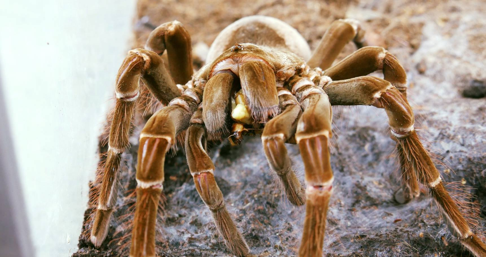
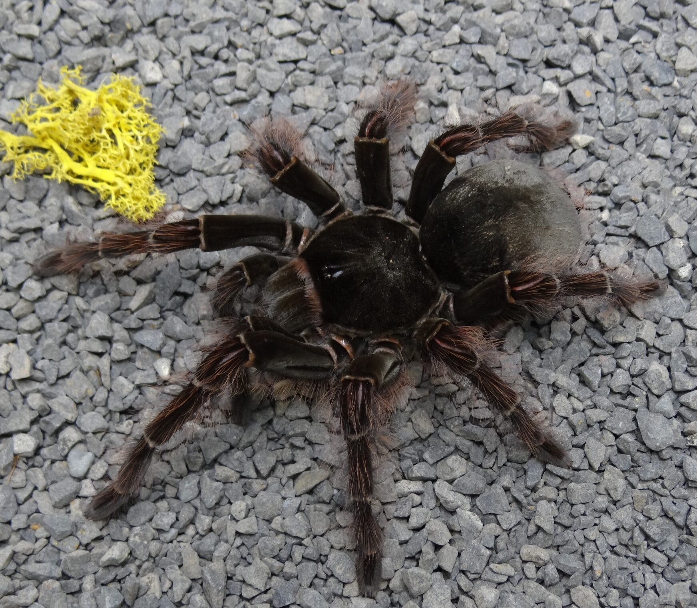

Pochodzenie
Wenezuela, Gujana, Brazylia
Wielkość
Rozpiętość odnóży: 25–30 cm
Masa: do 170 g
Długość życia
Samice: 12–15 lat
Samce: 3–6 lat
Aktywność
Nocna, w dzień ukrywa się w norach
Typ
Naziemny, kopiący
Theraphosa blondi – największy ptasznik świata pod względem masy

Wenezuela, Gujana, Brazylia
Rozpiętość odnóży: 25–30 cm
Masa: do 170 g
Samice: 12–15 lat
Samce: 3–6 lat
Nocna, w dzień ukrywa się w norach
Naziemny, kopiący

24–28°C, nocą 22–24°C
75–90%, regularne zraszanie
Nie wymagane, unika światła
Głębokie, dobrze ubite, umożliwiające kopanie
Stały dostęp do miski z wodą
Usuwanie resztek owadów, wymiana podłoża co 2–3 miesiące

Karmienie co 7–10 dni. Gatunek o dużym apetycie, ale nie należy przekarmiać.